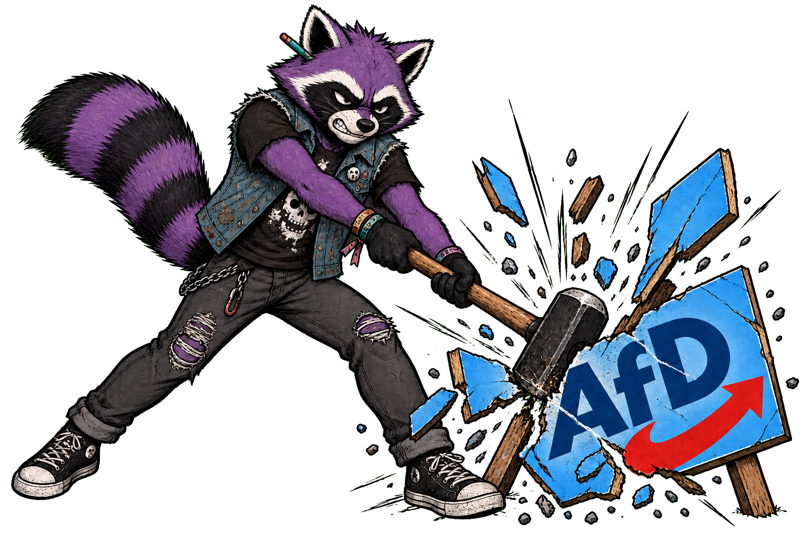

RandaleFUNK macht Pause
RandaleFUNK liegt auf Eis.
Heute wird in Sachsen-Anhalt ein neuer Landtag gewählt.
Deshalb gibt es hier gerade keine News, Reviews oder sonstigen Punkrock-Quatsch. Nicht, weil Musik plötzlich unwichtig wäre. Sondern weil ich diesen Tag nicht zwischen zwei Plattenkritiken schieben möchte.
Ich bin kein großer Fan unserer repräsentativen Demokratie. Alle paar Jahre ein Kreuz machen und anschließend anderen beim Regieren zusehen, ist nicht unbedingt meine Vorstellung von Freiheit.
Aber das Ergebnis ist real.
Die Menschen, die heute gewählt werden, bekommen Macht über Schulen, Kultur, politische Bildung, Behörden, Medien und das Leben anderer Menschen.
Der AfD-Landesverband Sachsen-Anhalt wird vom Landesverfassungsschutz als gesichert rechtsextremistische Bestrebung eingestuft. Für meine Ablehnung muss ich der Partei trotzdem nichts andichten. Ihre angekündigten Ziele reichen mir vollkommen.
Ich werde euch nicht sagen, welche Partei ihr wählen sollt.
Aber geht wählen.
Informiert euch. Lest Programme. Glaubt nicht jeden Scheiß, nur weil er gut in eure eigene Meinung passt. Und denkt darüber nach, wem ihr politische Macht geben wollt.
Wählen ersetzt keinen Protest, keine Solidarität und keinen Widerstand. Es ist nur ein Werkzeug. Aber heute liegt dieses Werkzeug verdammt noch mal auf dem Tisch.
Fick das System. Aber denkt vorher darüber nach, wem ihr die Schlüssel dafür gebt.
Burg
RandaleFUNK

Einordnung des AfD-Landesverbandes: Verfassungsschutz Sachsen-Anhalt. Wahltermin und Informationen: Landeswahlleiterin Sachsen-Anhalt.